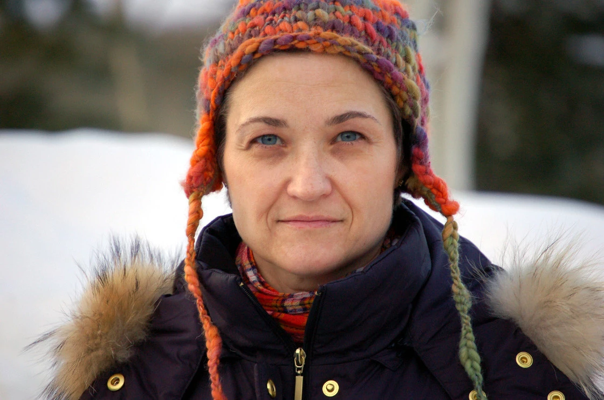
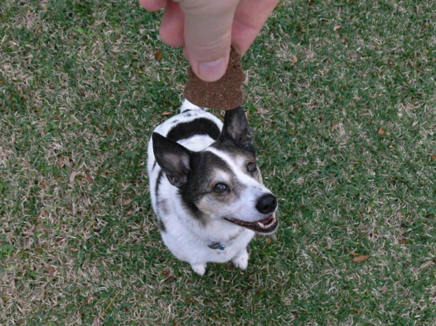
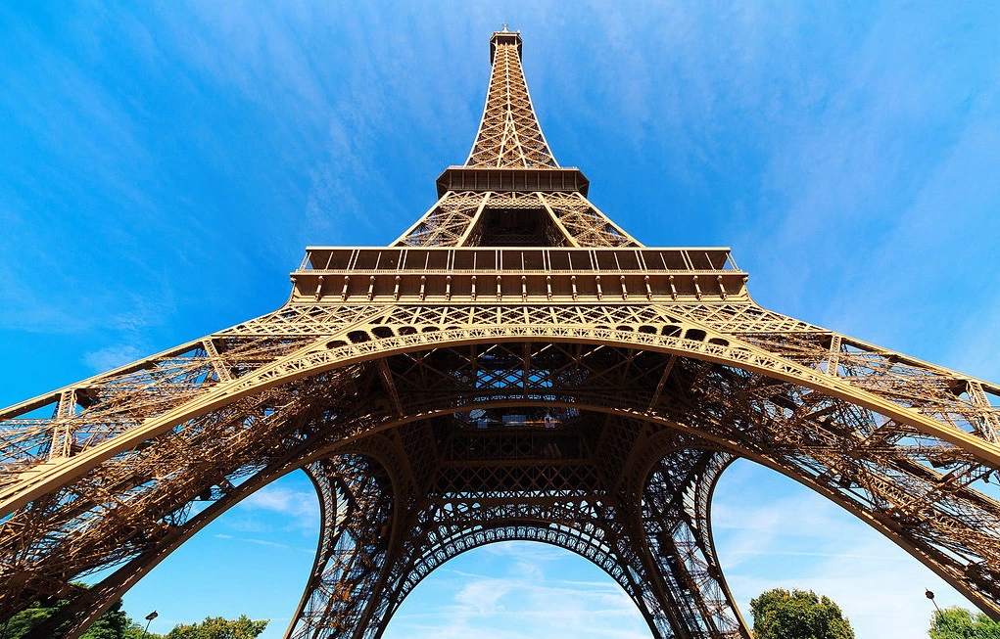
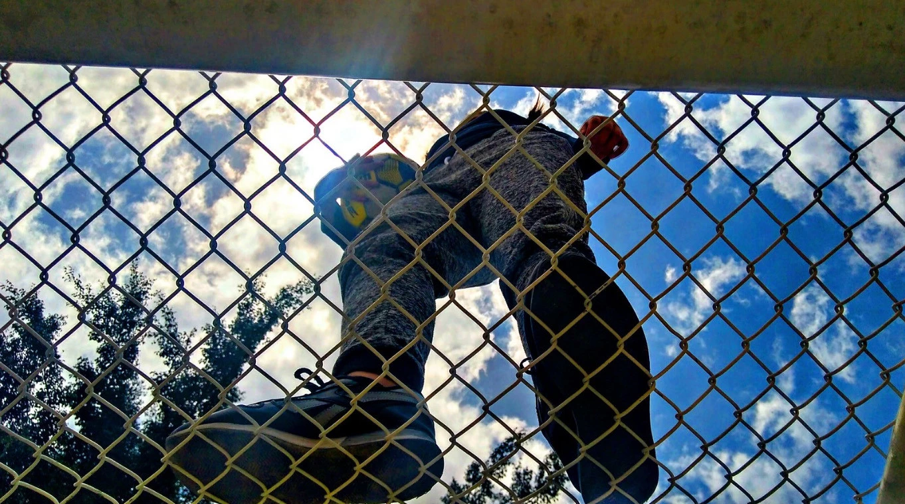
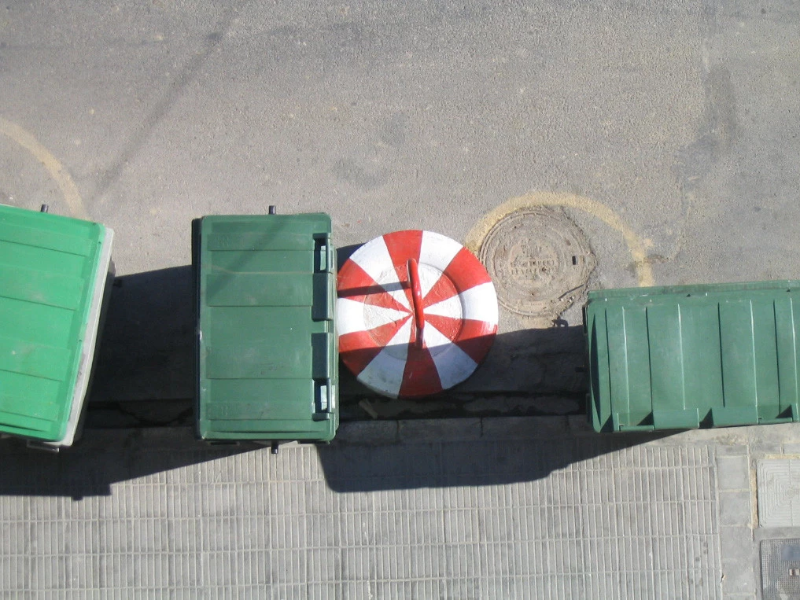
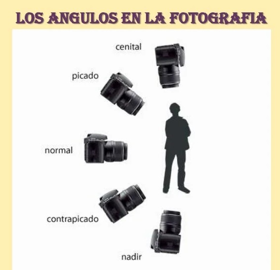

Arte en Cámara
Arte en Cámara
Arte en Cámara
Arte en Cámara
Una de las técnicas que comúnmente se usa para dar más importancia a un sujeto o resaltar las características de éste
es cambiar el ángulo desde el que tomamos la foto.
Existen diversos tipos de ángulos a la hora de tomar las fotos:

Este ángulo es aquél en el que la cámara se encuentra paralela al suelo. Es en el que hacemos la mayoría de fotos cuando estamos
de pie. Nos da la sensación de estabilidad y se ha de hacer siempre a la altura de los ojos.
Uno de los errores en este aspecto es la fotografía de niños desde nuestra altura, que obtendrán mucho más protagonismo si les
fotografiamos desde su altura

Aquí la foto se toma a una altura superior a la de los elementos de la escena. Este punto de vista tiende a disminuir el peso visual de los
sujetos u objetos fotografiados.
Si lo utilizamos en paisajes, podremos conseguir reducir la presencia del fondo. Además, será sólo posible en las fotografías urbanas en ángulo
picado conseguir captar de la mejor manera los coches y peatones en movimiento.
Si pensamos en los retratos de personas, éste ángulo representa a un sujeto débil o inferior.

En este caso, ocurre todo lo contrario al picado. Nos encontramos a una altura inferior a la
de los elementos de la escena. Con el contrapicado conseguiremos que los objetos o personas bajas cobren altura.
Con estos ángulos conseguimos invertir el sentido de las proporciones con unos resultados muy sugerentes. En el
caso del retrato de personas, conseguiremos la apariencia de un personaje fuerte o superior.

La cámara se coloca completamente bajo el sujeto, de manera perpendicular al suelo. Aquí conseguimos un efecto más exagerado
aún que con el ángulo picado. Conseguimos una perspectiva central, ya que las líneas tienden hacia el centro de la escena.

Colocamos la cámara desde arriba, totalmente perpendicular al suelo. El ángulo cenital es muy usado en producciones cinematográficas
o tomas desde helicóptero para grabar extensiones muy amplias. O los mapas por satélite, que quizá sean el ejemplo más representativo de ángulo cenital.
En la foto de ejemplo, vemos como unos simples contenedores adquieren un toque casi artístico con un plano cenital.
Y a continuación, un pequeño resumen visual de los planos que hemos comentado y su posición
respecto al sujeto u objeto fotografiado
